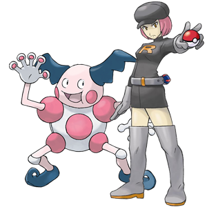

La Team Rocket a capturé M. Mime!
Pour sauver le pauvre Pokémon...
1. Choose three expressions with faire from the list below:
faire attention, faire la connaissance, faire les courses, faire la cuisine, faire les devoirs, faire la fête, faire la lessive, faire le lit, faire le ménage, faire la queue, faire une promenade, faire les provisions, faire du shopping, faire la sieste, faire du sport, faire la vaisselle, faire un voyage
2. Act out the three expressions with gestures and either take a series of photos or a short video to document them.
3. Share your photos or video with Prof Trent! You can:- upload your file(s) to D2L, or
- email them to thoy@broward.edu
Be sure to indicate in some way which three expressions you chose!
(Optional) If you’d like, share one of your photos on social media! If you can, write a simple French caption and try to include a relevant French hashtag. For Twitter, tag @TrentHoy and @BrowardCollege. For Instagram, tag @ProfTrent and use the hashtags #BrowardCollege and #ProfTrent. (If your account is private, then send it as a direct message.)
4. When you are finished, click here!